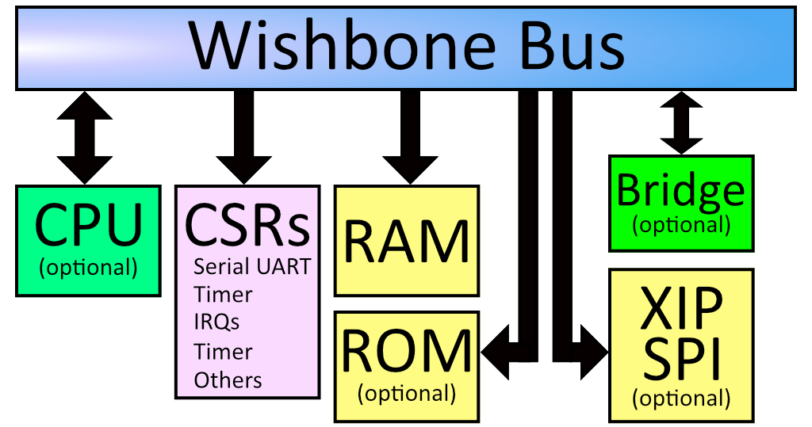
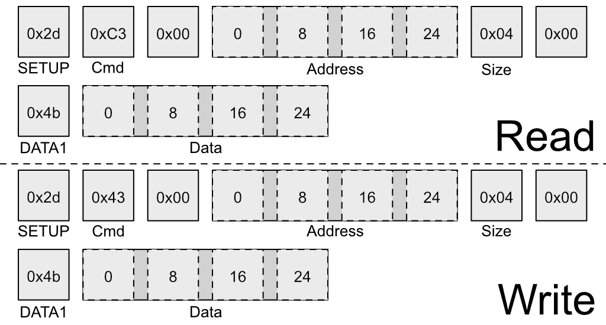

Fomu as a CPU¶
The MicroPython interface is simply a RISC-V program. It interacts with the RISC-V softcore inside Fomu by reading and writing memory directly.
The CPU in Fomu is built on LiteX, which places every device on a Wishbone bus. This is a 32-bit internal bus that maps peripherals into memory.
{kind=link}
If you look at the diagram above, you can see that everything in the
system is on the Wishbone bus. The CPU is a bus master, and can initiate
reads and writes. The system’s RAM is on the wishbone bus, and is
currently located at address 0x10000000. The boot ROM is also on the
bus, and is located at 0x00000000. There is also SPI flash which is
memory-mapped, so when you load your program onto the SPI flash it shows
up on the Wishbone bus at offset 0x20040000.
The Configuration and Status Registers (CSRs) all show up at offset
0xe0000000. These are the registers we were accessing from Python.
Just like before, these special memory addresses correspond to control
values.
You’ll notice a “Bridge” in the diagram above. This is an optional feature that we ship by default on Fomu. It bridges the Wishbone bus to another device. In our case, it makes Wishbone available over USB.
{kind=link}
The above image shows the structure of a special USB packet we can generate to access the Wishbone bus from a host PC. It lets us do two things: Read a 32-bit value from Wishbone, or write a 32-bit value to Wishbone. These two primitives give us complete control over Fomu.
Recall these definitions from earlier:
#define CSR_VERSION_MAJOR_ADDR 0xe0007000L
#define CSR_VERSION_MINOR_ADDR 0xe0007004L
#define CSR_VERSION_REVISION_ADDR 0xe0007008L
#define CSR_VERSION_MODEL_ADDR 0xe0007028L
We can use the wishbone-tool program to read these values directly
out of Fomu:
wishbone-tool 0xe0007000
wishbone-tool 0xe0007004
wishbone-tool 0xe0007008
The three values correspond to the version number of the board at time of writing: v2.0.3.
We can also read and write directly to memory. Recall that memory is
mapped to address 0x10000000. Let’s write a test value there and try
to read it back.
wishbone-tool 0x10000000
wishbone-tool 0x10000000 0x12345678
wishbone-tool 0x10000000
We can see that the value got stored in memory, just like we thought it would. The bridge is working, and we have access to Fomu over USB.
Interacting with the LED Directly¶
Recall the LED block from Python. We used rgb.write_raw() to write
values to the LED block. Because of how the LED block is implemented, we
need to actually make two writes to the Wishbone bus in order to write
one value to the LED block. The first write sets the address, and the
second write sends the actual data.
The registers for the LED block are defined as:
#define CSR_RGB_DAT_ADDR 0xe0006800
#define CSR_RGB_ADDR_ADDR 0xe0006804
Let’s change the red color to the maximum value. To do that, we’ll write
a 1 to the address register, and 0xff to the data register:
wishbone-tool 0xe0006804 1
wishbone-tool 0xe0006800 0xff
We can see that the LED immediately changed its behavior. Try playing around with various values to see what combinations you can come up with!
You can reset Fomu by writing a special value to the CSR_REBOOT_CTRL
register at 0xe0006000L. All writes to this register must start with
0xac, to ensure random values aren’t written. We can reboot Fomu by
simply writing this value:
wishbone-tool 0xe0006000 0xac
We can see that wishbone-tool has crashed with an error of
USBError(Pipe), because the USB device went away as we were talking
to it. This is expected behavior. Fomu should be back to its normal
color and blink rate now.
Compiling RISC-V Code¶
Of course, Fomu’s softcore is a full CPU, so we can write C code for it.
Go to the riscv-blink/ directory and run make. This will
generate riscv-blink.dfu, which we can load onto Fomu.
make
dfu-util -D riscv-blink.dfu
This will load the binary onto Fomu and start it immediately. The LED should be blinking quickly in a rainbow pattern. Congratulations! You’ve compiled and loaded a RISC-V program onto a softcore.
Let’s modify the program by increasing the fade rate so much that it
appears solid. First, reboot Fomu by running
wishbone-tool 0xe0006000 0xac. Next, apply the following patch to
src/main.c:
--- a/riscv-blink/src/main.c
+++ b/riscv-blink/src/main.c
@@ -46,6 +46,7 @@ int main(void) {
usb_init();
rgb_init();
usb_connect();
+ rgb_write((100000/64000)-1, LEDDBR);
int i = 0;
while (1) {
color_wheel(i++);
What this does is increase the LED blink rate from 250 Hz to a much
higher value. Compile this and load it again with
dfu-util -D riscv-blink.bin. The blink rate should appear solid,
because it’s blinking too quickly to see.
Debugging RISC-V Code¶
Because we have peek and poke, and because the USB bridge is a
bus master, we can actually halt (and reset!) the CPU over the USB
bridge. We can go even further and attach a full debugger to it!
To start with, run wishbone-tool -s gdb:
wishbone-tool -s gdb
In a second window, run gdb on riscv-blink.elf:
riscv64-unknown-elf-gdb riscv-blink.elf -ex 'target remote localhost:3333'
(gdb)
If we run bt we can get a backtrace, and chances are that we landed
in an msleep function:
(gdb) bt
#0 0x2004014c in csr_readl (addr=3758106664) at ./include/hw/common.h:46
#1 timer0_value_read () at ./include/generated/csr.h:242
#2 0x200401dc in msleep (ms=ms@entry=80) at ./include/hw/common.h:41
#3 0x20040074 in main () at ./src/main.c:45
(gdb)
We can insert breakpoints, step, continue execution, and generally debug
the entire system. We can even reset the program by running
mon reset.
Using Rust¶
As an alternative to C, the Rust Language can be used to write software for the Fomu softcore.
To install Rust, follow the instructions on https://rustup.rs/. After installing Rust, we can install support for RISCV
targets using rustup:
rustup target add riscv32i-unknown-none-elf
A Rust version of the C program used above is located in the riscv-rust-blink directory. Change into that directory,
and build it using cargo, the Rust package manager:
cargo build --release
The resulting binary is located in the target subfolder: target/riscv32i-unknown-none-elf/release/riscv-rust-blink. It can
be flashed using the flash.sh script, also located in the riscv-rust-blink folder:
./flash.sh
Now the Fomu should blink in the same rainbow pattern as before.
Warning
The Rust example currently does not support the USB functionality. After programming the example, we will not be able to acces the Fomu over USB anymore. To enable USB again, we have to reset the Fomu by removing it from the USB port and plugging it in again.
Further RISC-V experiments¶
The TinyUSB USB stack supports Fomu. To get started with it, you might compile the mass storage example it provides. To do so, follow these steps:
Clone the TinyUSB git repository:
git clone https://github.com/hathach/tinyusb(you don’t need to initialize the subrepositories)Change to
tinyusb/examples/device/cdc_mscCompile:
make BOARD=fomu CROSS_COMPILE=riscv64-unknown-elf-Load it onto the Fomu:
dfu-util -D _build/fomu/cdc_msc.bin
Fomu should now appear as a USB storage device containing a README.